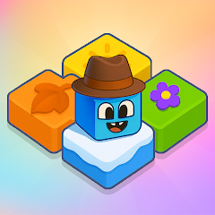
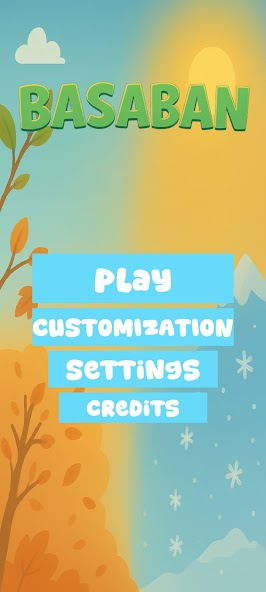
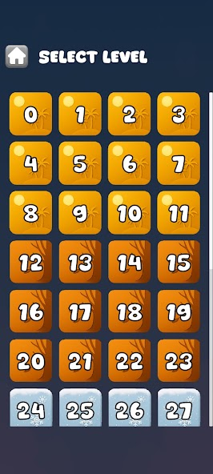
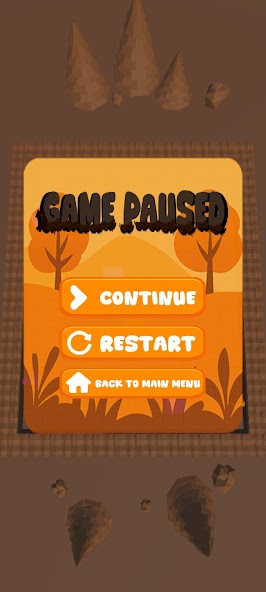

BASABANRENKLİ BİR BULMACA DÜNYASI

Gerçek oyun görüntüleri · Google Play
BasabanRenkleri eşleştir.
Çözümü adım adım bul.
Sokoban tarzı kutu itme fikri, renkli ve üç boyutlu bir bulmaca dünyasıyla buluşuyor. Blokları doğru yerlere taşı, geçişleri açık tut ve bir sonraki hamleni planla.
Orman ve kar temalı alanlar, farklı bölüm düzenleri ve karakter özelleştirme seçenekleriyle kendi çözüm yolunu keşfet.
- PLATFORM
- Android
- TÜR
- 3D mantık & bulmaca
- İÇERİK
- 45+ seviye
- İLERLEME
- Otomatik kaydetme
Google Play’de Order66 Studios geliştirici adıyla listelenir.






OYUNUN İÇİNDENHer bölüm,
Her bölüm,
yeni bir düzen.
Renkli bloklar, sade kontroller ve farklı görsel temalar. Görüntüleri büyüterek Basaban’ın dünyasına yakından bak.
Tüm detaylar Google Play’de ↗